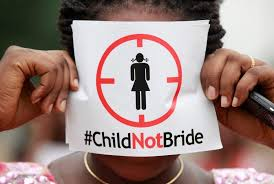

Understanding the impact on children and society
Child marriage is a serious social issue that affects millions of young girls around the world. It often forces children, especially girls, into adult responsibilities far too early, robbing them of their childhood, education, and dreams.
Many families believe they are protecting their daughters by marrying them off early, but in reality, this practice exposes them to health risks, abuse, and lifelong poverty. Education remains one of the strongest tools to break this cycle, empowering girls to make informed choices about their futures.
Ending child marriage requires strong laws, community awareness, and support for girls to stay in school. Every child deserves a chance to grow up, learn, and live freely before making such life-changing decisions.
Niger has one of the highest rates of child marriage globally: more than three-quarters of girls under 18 are married, with nearly 30% married before age 15.
Impacts include:
In Bangladesh, around half of girls are married before 18, and many before 15.
Impacts include:
In Somalia about 36% of women aged 20-24 were married before 18.
Impacts include: